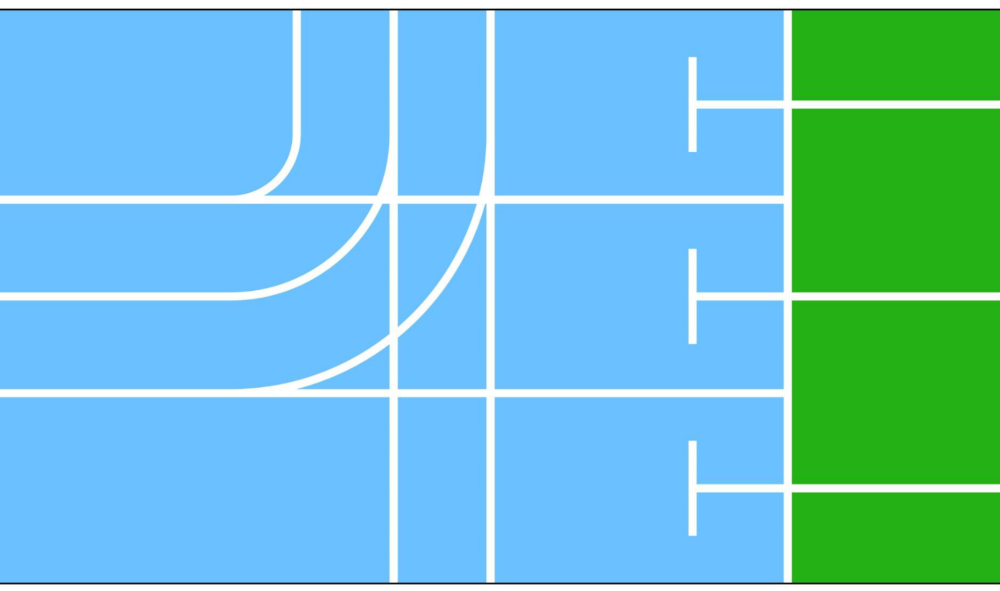

International Standards · ISII
Edition 2027 · effective 1 January 2027 · current
Retrieved on 26 November 2026 from https://www.wada-ama.org/sites/default/files/2026-03/2027_international_standard_for_intelligence_and_investigations_isii.pdf
p. 1
2027 International Standard for Intelligence and Investigations

p. 2
International Standard for Intelligence and Investigations
The World Anti-Doping Code International Standard for Intelligence and Investigations is a mandatory International Standard developed as part of the World Anti-Doping Program. It was developed in consultation with Signatories, public authorities, Athletes, and other relevant stakeholders.
The International Standard for Intelligence and Investigations was first adopted and approved by the WADA Executive Committee at the sixth World Conference on Doping in Sport in Busan on 5 December 2025 and is effective as of 1 January 2027.
Published by:
World Anti-Doping Agency Stock Exchange Tower 800 Place Victoria (Suite 1700) PO Box 120 Montreal, Quebec, Canada H3C 0B4
www.wada-ama.org
Tel:
Fax:
+1 514 904 9232
+1 514 904 8650
E-mail: code@wada-ama.org
p. 3
p. 4
PART ONE: INTRODUCTION, CODE PROVISIONS, AND INTERPRETATION
1.0 Introduction and Scope
The International Standard for Intelligence and Investigations is a mandatory International Standard developed as part of the World Anti-Doping Program. It was developed in consultation with Signatories, public authorities, and other relevant stakeholders.
The International Standard for Intelligence and Investigations was first adopted and approved by the WADA Executive Committee at the World Anti-Doping Conference in Busan on 5 December 2025 and is effective as of 1 January 2027.
The International Standard for Intelligence and Investigations sets out the core responsibilities of Anti-Doping Organizations regarding collecting, receiving, storing, and assessing Raw Information, using Anti-Doping Intelligence, and conducting investigations into possible anti-doping rule violations, non-compliance of Signatories and WADA-accredited laboratories, and other activities that may facilitate doping.
2.0 Code Provisions
The following Articles in the 2027 Code are directly relevant to the International Standard for Intelligence and Investigations; they can be obtained by referring to the Code itself:
- Code Article 2 Anti-Doping Rule Violations
- Code Article 3 Proof of Doping
- Code Article 5 Testing and Investigations
- Code Article 8 Results Management: Right to a Fair Hearing and Notice of Hearing Decision
- Code Article 10 Sanctions on Individuals
- Code Article 12 Sanctions by Signatories Against Other Sporting Bodies
- Code Article 13 Results Management: Appeals
- Code Article 14 Confidentiality and Reporting
- Code Article 20 Additional Roles and Responsibilities of Signatories and WADA
- Code Article 21 Additional Roles and Responsibilities of Athletes and Other Persons
- Code Article 23 Acceptance and Implementation
3.0 Interpretation
The official text of the International Standard for Intelligence and Investigations shall be published in English and French. In the event of any conflict between the English and French versions, the English version shall prevail.
Like the Code, the International Standard for Intelligence and Investigations has been drafted giving consideration to the principles of proportionality, human rights, and other applicable legal principles. It shall be interpreted and applied in that light.
The comments annotating various provisions of the International Standard for Intelligence and Investigations shall be used to guide its interpretation.
p. 5
Unless otherwise specified, references to Articles are references to Articles of the International Standard for Intelligence and Investigations.
Terms used in this International Standard that are defined terms from the Code are italicized. Terms that are defined in this or another International Standard are underlined.
Defined terms from the Code and International Standards that are used in the International Standard for Intelligence and Investigations are found in Appendix I.
The Appendix to the International Standard for Intelligence and Investigations has the same mandatory status as the rest of the International Standard.
The following terms used in the International Standard for Intelligence and Investigations shall be interpreted as indicated:
- "Shall" to indicate a mandatory requirement.
- "Should" to indicate a recommendation.
p. 6
PART TWO: STANDARDS FOR INFORMATION AND INTELLIGENCE GATHERING AND THE CONDUCT OF INVESTIGATIONS
4.0 Raw Information and Anti-Doping Intelligence
4.1 Objective
Anti-Doping Organizations shall ensure they are able to collect, receive, store, and assess Raw Information and/or Anti-Doping Intelligence, from all available sources, and then use such Raw Information and/or Anti-Doping Intelligence to inform and guide their Anti-Doping Activities. The objective of Article 4 is to establish what an Anti-Doping Organization shall do to fulfill the minimum standards set out in this Article.
[Comment to Article 4.1: While Testing will always remain an integral part of the anti-doping effort, Testing alone is not sufficient to detect and establish to the requisite standard all anti-doping rule violations identified in the Code. This means that Anti-Doping Organizations need to develop a capable intelligence-gathering and investigation function. WADA has devised Guidelines for the International Standard for Intelligence and Investigations to assist Anti-Doping Organizations in their efforts to comply with the Code and this International Standard.]
4.2 Collection, Storage and Sharing
4.2.1 Anti-Doping Organizations shall ensure that they are able to collect, receive, and store Raw Information and/or Anti-Doping Intelligence from all available sources.
[Comment to Article 4.2.1: Available sources of Raw Information and/or Anti-Doping Intelligence include, but are not limited to, Athletes and Athlete Support Personnel and members of the public (e.g., by means of a confidential reporting platform like the WADA Speak Up platform), Sample Collection Personnel (whether via mission reports, incident reports, or otherwise), Doping Control Forms (including declarations made by Athletes), whereabouts data, laboratories, pharmaceutical companies, other Anti-Doping Organizations, WADA, National Federations, law enforcement, other regulatory and disciplinary bodies, and the media (in all its forms).]
4.2.2 Anti-Doping Organizations shall share Anti-Doping Intelligence with other Anti-Doping Organizations in a secure manner (e.g., encryption) where such disclosure allows the Anti-Doping Organization receiving the intelligence to fulfill its obligations under the Code and/or the International Standards. Where an Anti-Doping Organization shares Anti-Doping Intelligence with another Anti-Doping Organization it shall do so in accordance with the International Standard for Data Protection and any relevant national data protection legislation*. Anti-Doping Organizations* shall share Anti-Doping Intelligence with other relevant authorities (e.g., law enforcement) on a need-to-know basis where appropriate and in accordance with the International Standard for Data Protection and applicable law. The sharing of Anti-Doping Intelligence may be delayed in exceptional and justified circumstances.
[Comment to Article 4.2.2: Anti-Doping Intelligence should be shared with the relevant Anti-Doping Organization(s) or other relevant authority(ies) as quickly as possible, and in as much detail as possible to maximize the value and benefit of that intelligence to the receiving Anti-Doping Organization(s) or other relevant authority(ies). However, Anti-Doping Organizations may delay their disclosure of Anti-Doping Intelligence where there is a legitimate reason to do so (e.g., the immediate disclosure may compromise or adversely impact an ongoing investigation, intelligence operation or Results Management process).
An example of a disclosure that is necessary to allow the recipient Anti-Doping Organization to fulfill its obligations under the Code and/or the International Standards is where the Anti-Doping Intelligence relates to an Athlete, Athlete Support Personnel, or other Person under the authority (e.g., Results Management jurisdiction) of the recipient Anti-Doping Organization.
An example of an exceptional and justified circumstance not to share Anti-Doping Intelligence with another Anti-Doping Organization would be where the disclosure is likely to seriously compromise the status of an ongoing investigation, or likely to reveal the identity of a Confidential Human Source, or where the intelligence to be disclosed had been received by the first Anti-Doping Organization as part of a Without Prejudice Agreement.
Nothing in this Article prevents an Anti-Doping Organization from sharing Raw Information with an Anti-Doping Organization or other relevant authority where the Anti-Doping Organization reasonably believes that the Raw Information will likely assist the Anti-Doping Activities of the recipient Anti-Doping Organization, or the work of the other relevant authority. Any such disclosure of Raw Information shall be done in accordance with the International Standard for Data Protection.]
p. 7
4.2.3 Anti-Doping Organizations shall have policies and procedures in place to ensure that the Raw Information and/or Anti-Doping Intelligence in its possession is handled securely, confidentially and shared with other Anti-Doping Organizations or any relevant authority (e.g., law enforcement) where appropriate and in accordance with the International Standard for Data Protection and any relevant national data protection legislation.
[Comment to Article 4.2.3: WADA has devised applicable templates - housed within the Guidelines for the International Standard for Intelligence and Investigations - to assist Anti-Doping Organizations comply with Article 4.2.3.]
4.2.4 If an Anti-Doping Organization manages a Confidential Human Source, the Anti-Doping Organization shall have a policy and procedure in place for the handling, management, and use of Confidential Human Sources.
[Comment to Article 4.2.4: To assist Anti-Doping Organizations in their use and management of Confidential Human Sources, WADA has published the ISII Guideline - Human Source Management on its website along with an applicable template.]
4.2.5 Anti-Doping Organizations shall not disclose or confirm the identity of a Confidential Human Source except where such disclosure is required by law or with the informed written consent of the Confidential Human Source.
4.3 Assessment and Use
4.3.1 Anti-Doping Organizations shall ensure they can assess the relevance and reliability of the Raw Information and/or Anti-Doping Intelligence that they collect and receive.
[Comment to Article 4.3.1: An example of how to assess reliability would be to consider the nature of the source of information, the circumstances in which the information had been provided, and whether there is any supporting or corroborating information or evidence. There are also databases and case management systems that may be used to assist in the organization, Processing, analysis, and cross-referencing of such intelligence.]
4.3.2 Anti-Doping Organizations shall use Raw Information and/or Anti-Doping Intelligence to inform and guide their Anti-Doping Activities.
[Comment to Article 4.3.2: An example of the use that can be made of Raw Information and/or Anti-Doping Intelligence is that outlined in Article 12 of the International Standard for Testing p. 8 (i.e., to inform the development of an effective, intelligent, and proportionate Test Distribution Plan and to plan Target Testing). Moreover, Anti-Doping Organizations should recognize that although Raw Information may not contain direct evidence of an anti-doping rule violation, investigative steps should be taken to follow up on information that could lead to direct or indirect evidence of an anti-doping rule violation.]
5.0 Investigations
Cited by 1
5.1 Objective
Investigations conducted by an Anti-Doping Organization under the Code shall be based on the minimum standards set out in this Article.
5.2 Purpose
In acknowledgement of the fundamental right of an Athlete to participate in doping-free sport, the purpose of an investigation includes, but is not limited to, gathering sufficient evidence to prove or disprove that an anti-doping rule violation has been committed. In the case of an investigation conducted by WADA per Code Article 20.8.15, that purpose includes, but is not limited to, establishing whether a Signatory has or has not committed a breach of the Code or any International Standard.
5.3 Conducting Investigations
5.3.1 Anti-Doping Organizations shall conduct investigations, within the scope of their authority, where there is reasonable cause to believe an anti-doping rule violation or other relevant breach of the Code or applicable International Standard (e.g., whereabouts failure, violation of Code Article 10.14.1, etc.) may have occurred. Where an International Standard, Technical Document or other relevant WADA document requires specific review protocols, Anti-Doping Organizations shall follow such protocols as part of their investigation.
[Comment to Article 5.3.1: "Reasonable cause" means there is a credible and justifiable basis to believe that a breach of the Code or applicable International Standard may have occurred. It requires more than a hunch or speculation, but not conclusive proof. Anti-Doping Organizations shall assess and document their decision to proceed - or not - with an investigation.]
5.3.2 Anti-Doping Organizations should ensure all investigations are conducted by individuals with investigative qualifications or experience.
[Comment to Article 5.3.2: WADA's Global Learning and Development Framework provides accessible and standardized training for a range of anti-doping roles, including investigation, to all Anti-Doping Organizations and other stakeholders worldwide.]
5.3.3 Anti-Doping Organizations shall conduct each investigation impartially, objectively, and with an open mind.
[Comment to Article 5.3.3: Investigations shall not be conducted with a closed mind, pursuing only one outcome (e.g., proving that an Athlete had committed an anti-doping rule violation). Rather, investigators will consider all possible outcomes at each stage of the investigation, seeking to gather not only evidence indicating that there is a case to answer, but also any evidence indicating that there is no case to answer.]
5.3.4 Anti-Doping Organizations shall have policies and procedures in place for conducting investigations, especially when it comes to Protected Persons and Minors, for which those policies and procedures should reflect the fact that the
p. 9
Code treats Protected Persons and Minors differently than other Athletes or Persons in certain circumstances.
5.3.5 Anti-Doping Organizations should plan each investigation and make use of all investigative resources and powers available to them. This may include obtaining Raw Information, Anti-Doping Intelligence, or evidence from other Anti-Doping Organizations or other relevant authorities (e.g., law enforcement), or exercising powers conferred to the Anti-Doping Organization under applicable rules (e.g., the power to demand production of relevant documents and information). An investigation plan is important because it helps identify the resources and avenues of enquiry necessary to complete the investigation in a competent and timely manner.
[Comment to Article 5.3.5: While notification of an Adverse Analytical Finding or other potential anti-doping rule violation is commonly done by letter alone, this practice does not maximize the use of available investigative resources, rather, it may decrease the chances of gathering evidence relevant to whether the Athlete has or has not committed an anti-doping rule violation. In an appropriate case (e.g., an Adverse Analytical Finding involving a professional or International-Level Athlete), the letter notifying the Athlete of an Adverse Analytical Finding, or a potential anti-doping rule violation should be delivered directly to the Athlete. During delivery, the content of the notification letter and the benefits of Code Article 10.7.3 (Substantial Assistance in discovering or establishing Code Violations) should be explained to the Athlete with or by an investigator.]
5.3.6 To ensure the preservation of evidence and any relevant Raw Information and/or Anti-Doping Intelligence in relation to a potential breach of the Code or International Standards, Anti-Doping Organizations should conduct investigations in a timely manner and without undue delay.
[Comment to Article 5.3.6: Factors which may reasonably impact the length of an investigation include, but are not limited to, the complexity of the investigation, the seriousness of the allegation, the involvement of evidence or assistance provided pursuant to Code Article 10.7.3, the availability of resources to the investigating Anti-doping Organization, or the involvement of law enforcement (e.g., law enforcement may request an Anti-Doping Organization to pause its investigation so as not to interfere with the law enforcement investigation).]
5.3.7 Anti-Doping Organizations shall gather and preserve all relevant Raw Information, Anti-Doping Intelligence, and evidence as soon as possible to develop such material into further lines of enquiry and/or reliable evidence in relation to the subject matter of the investigation.
5.3.8 Anti-Doping Organizations shall treat the Raw Information, Anti-Doping Intelligence, and evidence obtained during an investigation confidentially and only share such where appropriate, on a need-to-know basis, and in accordance with the International Standard for Data Protection and applicable law (see also Article 4.2.2).
[Comment to Article 5.3.8: When determining who has a need-to-know for investigation-related Raw Information and/or Anti-Doping Intelligence or evidence, the Anti-Doping Organization should consider whether the recipient has a legitimate purpose considering the recipient's role and responsibilities at that point in the investigation. An appropriate sharing of Raw Information and/or Anti-Doping Intelligence by an Anti-Doping Organization would include circumstances where the disclosure would likely help the recipient Anti-Doping Organization conduct its Anti-Doping Activities.]
p. 10
5.3.9 Anti-Doping Organizations shall document the conduct of an investigation, the evidence identified in that investigation, and the outcome of that investigation.
[Comment to Article 5.3.9: Documenting the conduct of an investigation may include, where applicable, obtaining a statement or conducting an interview with a relevant Person, and making a record of the enquiries conducted by an investigator.]
5.4 Cooperating with an Investigation
5.4.1 Signatories shall, per Code Article 20, cooperate with relevant national organizations and agencies and other Anti-Doping Organizations. Where the Signatory fails to cooperate with an investigation being conducted by an Anti-Doping Organization, that lack of cooperation should be reported to WADA as the entity responsible for monitoring compliance by Code Signatories.
5.4.2 Athletes and Athlete Support Personnel shall, per Code Article 21, cooperate with investigations conducted by Anti-Doping Organizations. Where the failure to cooperate amounts to a potential anti-doping rule violation (e.g., by providing false or misleading information, the destruction of potential evidence, or discouraging another Person from providing information that is relevant to the investigation) the Anti-Doping Organization shall investigate and pursue the anti-doping rule violation pursuant to the Code and relevant International Standard against the Athlete or Athlete Support Personnel for violation of any applicable anti-doping rule violation (e.g., Code Article 2.5 (Tampering or Attempted Tampering)). Where the failure to cooperate does not amount to an anti-doping rule violation, disciplinary action may be taken against the Athlete or Athlete Support Person under any other applicable rules.
[Comment to Article 5.4.2: The requirement for cooperation shall respect appropriate procedural safeguards (including without limitation the right not to self-incriminate and the right to be represented by counsel at the Person's own expense).
Any other applicable rules could include, but are not limited to, Code of Conduct, safety, or medical rules.]
5.5 Investigation Outcomes
Cited by 1
5.5.1 Anti-Doping Organizations shall decide without undue delay whether proceedings should be brought against the Athlete, Athlete Support Personnel, or other Person for any potential anti-doping rule violation, whereabouts failure and/or violation of Code Article 10.14.1.
Further, as set out in Code Article 13.3, if an Anti-Doping Organization fails to make such decision within a reasonable deadline set by WADA, then WADA may elect to appeal directly to CAS as if the Anti-Doping Organization had rendered a decision finding that no anti-doping rule violation has been committed. As noted in the comment to Code Article 13.3, however, before taking such action WADA will consult with the Anti-Doping Organization and give it an opportunity to explain why it has not yet rendered a decision.
5.5.2 Where the Anti-Doping Organization concludes based on the results of its investigation that an anti-doping rule violation, whereabouts failure and/or violations of Code Article 10.14.1 should be brought against the Athlete, p. 11 Athlete Support Personnel or other Person, it shall promptly notify the Athlete, Athlete Support Personnel or other Person of the potential anti-doping rule violation, whereabouts failure and/or violations of Code Article 10.14.1 and shall bring forward the proceedings against the Athlete, Athlete Support Personnel or other Person in the manner set out in the International Standard for Results Management.
5.5.3 Where the Anti-Doping Organization concludes, based on the results of its investigation, that an anti-doping rule violation, whereabouts failure and/or violation of Code Article 10.14.1 should not be brought forward against the Athlete, Athlete Support Personnel or other Person:
5.5.3.1 It shall notify WADA and the Athlete's or other Person's International Federation and National Anti-Doping Organization in writing of that decision, with reasons, in accordance with Code Article 14.2.1 and the International Standard for Results Management.
5.5.3.2 It shall provide all such other information about the investigation as is required by WADA and/or the International Federation and/or National Anti-Doping Organization to determine whether to appeal against that decision.
5.5.3.3 In any event, it shall consider whether any of the Raw Information and/or Anti-Doping Intelligence, or evidence obtained during the investigation should be used to inform and guide its Anti-Doping Activities or those of another Anti-Doping Organization, and/or should be shared with any other body in accordance with Article 4.2.2.
p. 12
APPENDIX 1: DEFINITIONS
I. Defined terms from the Code that are used in the International Standard for Intelligence and Investigations
Adverse Analytical Finding: A report from a WADA-accredited laboratory or other WADA-approved laboratory that, consistent with the International Standard for Laboratories, establishes in a Sample the presence of a Prohibited Substance or its Metabolites or Markers or evidence of the Use of a Prohibited Method.
Anti-Doping Activities: Anti-doping Education and information, test distribution planning, maintenance of a Registered Testing Pool, managing Athlete Biological Passports, conducting Testing, organizing analysis of Samples, gathering of intelligence and conduct of investigations, processing of Therapeutic Use Exemption applications, Results Management, monitoring and enforcing compliance with any Consequences imposed, and all other activities related to anti-doping to be carried out by or on behalf of an Anti-Doping Organization, as set out in the Code and/or the International Standards.
Anti-Doping Organization: WADA or a Signatory that is responsible for adopting rules for initiating, implementing, or enforcing any part of the Doping Control process. This includes, for example, the International Olympic Committee, the International Paralympic Committee, other Major Event Organizations that conduct Testing at their Events, International Federations, and National Anti-Doping Organizations.
Athlete: Any Person who competes in sport at the international level (as defined by each International Federation) or the national level (as defined by each National Anti-Doping Organization). An Anti-Doping Organization has discretion to apply anti-doping rules to an Athlete who is neither an International-Level Athlete nor a National-Level Athlete, and thus to bring them within the definition of "Athlete". In relation to Athletes who are neither International-Level nor National-Level Athletes, an Anti-Doping Organization may elect to: conduct limited Testing or no Testing at all; analyze Samples for less than the full menu of Prohibited Substances; require limited or no whereabouts information; or not require advance Therapeutic Use Exemptions. However, if an Article 2.1, 2.3 or 2.5 anti-doping rule violation is committed by any Athlete over whom an Anti-Doping Organization has elected to exercise its authority to test and who competes below the international or national level, then the Consequences set forth in the Code shall be applied. For purposes of Article 2.8 and Article 2.9 and for purposes of anti-doping information and Education, any Person who participates in sport under the authority of any Signatory, government, or other sports organization accepting the Code is an Athlete.
[Comment to Athlete: For the avoidance of doubt, an Anti-Doping Organization may not adopt different rules for such Athletes (including with respect to Therapeutic Use Exemptions) except with respect to the matters explicitly referenced above or as expressly allowed by an International Standard.
Individuals who participate in sport may fall in one of five categories: 1) International-Level Athlete, 2) National-Level Athlete, 3) individuals who are not International or National-Level Athletes but over whom the International Federation or National Anti-Doping Organization has chosen to exercise authority, 4) Recreational Athlete, and 5) individuals over whom no International Federation or National Anti-Doping Organization has, or has chosen to, exercise authority. All International- or National-Level Athletes are subject to the anti-doping rules of the Code, with the precise definitions of international and national level sport to be set forth in the anti-doping rules of the International Federations and National Anti-Doping Organizations.]
p. 13
Athlete Support Personnel/Athlete Support Person: Any coach, trainer, manager, agent, team staff, official, medical, paramedical personnel, parent or any other Person working with, treating or assisting an Athlete participating in or preparing for sports competition.
Attempt: Purposely engaging in conduct that constitutes a substantial step in a course of conduct planned to culminate in the commission of an anti-doping rule violation. Provided, however, there shall be no anti-doping rule violation based solely on an Attempt to commit a violation if the Person renounces the Attempt prior to it being discovered by a third party not involved in the Attempt.
CAS: The Court of Arbitration for Sport.
Code: The World Anti-Doping Code.
International Standard: A standard adopted by WADA in support of the Code. Compliance with an International Standard (as opposed to another alternative standard, practice, or procedure) shall be sufficient to conclude that the procedures addressed by the International Standard were performed properly. International Standards shall include any Technical Documents and Technical Letters issued pursuant to the International Standard.
Minor: A natural Person who has not reached the age of eighteen (18) years.
[Comment to Minor: For context, see Comment to Protected Person. Any circumstance where a Minor is to be treated differently than other Persons or Athletes has been specifically identified in the Code. It should not be assumed that different treatment was intended where it is not specifically expressed.]
National Anti-Doping Organization: The entity(ies) designated by each country as possessing the primary authority and responsibility to adopt and implement anti-doping rules, direct the collection of Samples, manage test results and conduct Results Management at the national level. If this designation has not been made by the competent public authority(ies), the entity shall be the country's National Olympic Committee or its designee.
Person: A natural Person or an organization or other entity.
Protected Person: An Athlete or other natural Person who at the time of the anti-doping rule violation: (i) has not reached the age of sixteen (16) years; (ii) has not reached the age of eighteen (18) years and is not included in any Registered Testing Pool and has never competed in any International Event in an open category; or (iii) for reasons other than age, has been determined to lack legal capacity under applicable national legislation.
[Comment to Protected Person: Not every Minor is a Protected Person. The Code differentiates between different groups of Minors based on two criteria: (i) age and (ii) level of sporting performance. Below the age of 16, Minors always qualify as Protected Persons. It is assumed that they are unable, in principle, to control their behavior in the same way as adults and therefore need to be given special treatment. Where Minors are over 16 (but below 18) years of age, they are assumed to have a higher level of understanding and, depending on their sporting level, better access to anti- doping Education. This justifies treating the age group between 16-18 differently from the age group below 16. The term "open category" is meant to exclude competition that is limited to junior or age group categories.
Athletes with a documented lack of legal capacity due to an intellectual impairment always qualify as Protected Persons independently of their age.
The purpose of the category of Protected Person is to take into account that an Athlete or other Person may not possess the mental capacity to sufficiently understand and appreciate the prohibitions against conduct contained in the Code. The special treatment of Protected Person flows from the fact that the central criteria to determine the period of Ineligibility is "Fault".
Those circumstances where a Protected Person, Minor or Recreational Athlete is to be treated differently than other Persons or Athletes have been specifically identified in the Code. It should not be assumed, with respect to Article 7.4 or any other Article in the Code, that different treatment was intended where it is not specifically expressed.]
p. 14
Results Management: The process encompassing the timeframe between notification as per Article 5 of the International Standard for Results Management, or in certain cases (e.g., Atypical Finding, Athlete Biological Passport, whereabouts failure), such pre-notification steps expressly provided for in Article 5 of the International Standard for Results Management, through the charge until the final resolution of the matter, including the end of the hearing process at first instance or on appeal (if an appeal was lodged).
Signatories: Those entities accepting the Code and agreeing to implement the Code, as provided in Article 23.
Substantial Assistance: For purposes of Article 10.7.3, a Person providing Substantial Assistance shall: (1) fully disclose in a signed written statement or recorded interview all information they possess in relation to anti-doping rule violations or other proceeding described in Article 10.7.3.1, and (2) fully cooperate with the investigation and adjudication of any case or matter related to that information, including, for example, presenting testimony at a hearing if requested to do so by an Anti-Doping Organization or hearing panel. Further, the information provided shall remain credible and valuable throughout any subsequent investigation or proceeding.
Tampering: Intentional conduct which subverts the Doping Control process. Tampering shall include, without limitation, offering or accepting a bribe to perform or fail to perform an act, preventing the collection of a Sample, affecting or making impossible the analysis of a Sample, falsifying documents submitted to an Anti-Doping Organization or Therapeutic Use Exemption committee or hearing panel, procuring false testimony from witnesses, committing any other fraudulent act upon the Anti-Doping Organization or hearing body to affect Results Management or the imposition of Consequences, and any other similar intentional interference or attempted interference with any aspect of Doping Control.
[Comment to Tampering: For example, this Article would prohibit altering identification numbers on a Doping Control form during Testing, breaking the B bottle at the time of B Sample analysis, altering a Sample by the addition of a foreign substance, or intimidating or Attempting to intimidate a potential witness or a witness who has provided testimony or information in the Doping Control process. Tampering includes misconduct which occurs during the Results Management process. See Code Article 10.9.3.3. However, actions taken as part of a Person's legitimate defense to an anti-doping rule violation charge shall not be considered Tampering. Sample collection personnel should be permitted to carry out their duties in a safe environment without interference or harassment. Offensive conduct towards a Doping Control official or other Person involved in Doping Control which does not otherwise constitute Tampering shall be addressed in the disciplinary rules of sport organizations.]
Target Testing: Selection of specific Athletes for Testing based on criteria set forth in the International Standard for Testing.
Technical Document: A document adopted and published by WADA from time to time containing mandatory technical requirements on specific anti-doping topics as set forth in an International Standard.
Testing: The parts of the Doping Control process involving test distribution planning, Sample collection, Sample handling, and Sample transport to the laboratory.
WADA: The World Anti-Doping Agency.
p. 15
Without Prejudice Agreement: For purposes of Articles 10.7.3.1 and 10.8, a written agreement between an Anti-Doping Organization and an Athlete or other Person that allows the Athlete or other Person to provide information to the Anti-Doping Organization in a defined time-limited setting with the understanding that, if an agreement for Substantial Assistance or a case resolution agreement is not finalized, the information provided by the Athlete or other Person in this particular setting may not be used by the Anti-Doping Organization against the Athlete or other Person in any Results Management proceeding under the Code, and that the information provided by the Anti-Doping Organization in this particular setting may not be used by the Athlete or other Person against the Anti-Doping Organization in any Results Management proceeding under the Code. Such an agreement shall not preclude the Anti-Doping Organization, Athlete, or other Person from using any Information or evidence gathered from any source other than during the specific time-limited setting described in the agreement.
II. Defined terms from the International Standard for Data Protection that are used in the International Standard for Intelligence and Investigations
Processing (and its cognates, Process and Processed): Collecting, accessing, retaining, storing, disclosing, transferring, transmitting, amending, deleting, using or other operation performed on Personal Information.
III. Defined terms specific to the International Standard for Intelligence and Investigations
Anti-Doping Intelligence: Anti-Doping Intelligence is the product of the evaluation and analysis of Raw Information to extract meaningful insights relevant to the end user (e.g., the Anti-Doping Activities of an Anti-Doping Organization).
Confidential Human Source: A Confidential Human Source is an umbrella term for any Person that has disclosed Raw Information and/or Anti-Doping Intelligence and/or evidence to an Anti-Doping Organization (or other relevant authority including law enforcement), and as such their identity is kept confidential by an Anti-Doping Organization and/or other relevant authority.
[Comment to Confidential Human Source: Confidential Human Sources may provide Raw Information and/or Anti-Doping Intelligence and/or evidence on a once-off, intermittent and/or ongoing basis.]
Raw Information: Raw Information is any raw, unverified, or unevaluated information (in any form) related to Anti-Doping Activities. Raw Information can come in many forms including, but not limited to, unprocessed data, information reports, Doping Control forms (including declarations made by Athletes), conversations / interviews, telephone calls, video, media reports, and anonymous or non-anonymous disclosures.
IV. Defined terms from the International Standard for Testing that are used in the International Standard for Intelligence and Investigations
Sample Collection Personnel: A collective term for qualified officials authorized by the Sample Collection Authority to carry out or assist with duties during the Sample Collection Session.
Test Distribution Plan: A document written by an Anti-Doping Organization that plans Testing on Athletes, in accordance with the requirements of Article 4.7.
Retrieved on 26 November 2026 from https://www.wada-ama.org/sites/default/files/2026-03/2027_international_standard_for_intelligence_and_investigations_isii.pdf